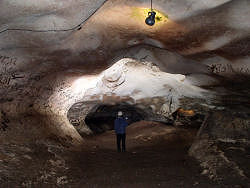

کرفتو
Ghar-e-Karaftu - Karaftu Cave - Caraftoo Cave - Cave Kereftoo - Karaftoo Historical Cave
Useful Information
| Image: shelters from outside. Photo by Simon Brooks, see Speleology No 12. |
| Location: | Near Karaftu. 72km east of Saqqez, 68km north of Divandarreh. |
| Open: | |
| Fee: | |
| Classification: | |
| Light: | electric |
| Dimension: | |
| Guided tours: | |
| Photography: | |
| Accessibility: | |
| Bibliography: |
Simon Brooks (2008):
Exedition Report: Iran 2007,
Spelelogy (12), Summer 2008, pp 10-12.
Simon Brooks (2008): A Return to Iran – Caving with the Damavand and the Hamadan Mountaineers, October 2007, Grampian Speleological Group Bulletin. Fourth series Vol 3 No 4, March 2008. pp 50-53 |
| Address: | Karaftu Cave, Tel: +98-, Fax: +98-, |
| As far as we know this information was accurate when it was published (see years in brackets), but may have changed since then. Please check rates and details directly with the companies in question if you need more recent info. |
|
| Last update: | $Date: 2015/11/20 13:19:42 $ |
History
| 1917 | explored by the Russian orientalist Khanikov. | |
| 2000 | excavations at the site. | |
| 2009 | cave vandalized, cave paintngs destroyed with graffittis. |
Description
 |
| Image: the artificial entrance part. Photo by Simon Brooks, see Speleology No 12. |
The Karaftu Cave is, in fact, a series of cave entrances in the cliff face near the town of Karaftu. The originally natural caves have been modified by the local inhabitants over centuries. The first of these modifications were probably carried out by members of the Arsacid dynasty more than 2,000 years ago. There is an engraving in Latin on the wall at the entrance reading: Where Heracletus dwells the evil can not enter. This has given rise to the theory that the cave may have been the temple of the Greek god Heraclius, the well known demigod known today as Hercules. Later it was used as a temple by members of the Mitraism cult, the sun worshippers.
|  |
| Image: preatic cave passage with graffitti. Photo by Simon Brooks, see Speleology No 12. |
There are numerous remains from various times, and the cave was obviously used continually as recent excavations have revealed pottery from the Arsacid, Sasanid and Islamic eras. Originally the entrances, high above the valley floor could only be reached by using ladders or ropes. The locals always used the rather inaccessible caves in times of danger as a hideout, and, until the present time, it was known as Karaftu Castle. The cave has been visited since the 19th century by explorers, including Orientalists such as Jean-Jacques de Morgan (1857-1924) and Sir Henry Rawlinson (1810-1895). They visited the cave and even mapped it.
The cave entrance is between 20 and 30 meters up, in a south-west facing cliff face. Today a long staircase leads up to the entrance and the other cave entrances are secured by railings. The cave is described as having four levels or floors, and a total length around 750m. Recent developments at the caves have included the construction of a new road, parking area, and signage. There are wooden walkways and steps connecting the many cave entrances.
Behind this artificial cave lies a large, and very spectacular, natural phreatic cave with numerous passages and large chambers. he most recent development has been the installation of lighting throughout the main sections of the main cave, and it can now be traversed for over 600m to a large chamber.
 |
| Karaftu Gallery |
- See also
 Search Google for "Karaftu Cave"
Search Google for "Karaftu Cave" Google Earth Placemark
Google Earth Placemark Karaftu - Wikipedia, the free encyclopedia
Karaftu - Wikipedia, the free encyclopedia Historical and Natural Caves, Kurdestan
Historical and Natural Caves, Kurdestan- Iranian Kurdistan: Ancient cave holds historic riches
- Historical and natural attractions make Kurdestan province of Iran a tourist hub
- Natural Cave or Hercules Temple? - CAIS Archaeological & Cultural Daily News of Iran©
- Iran Review - Karaftu, Secret of Kurdistan Heights
- Flickr Photo Download: The Karaftu cave (Persian: ?????)
gallery.